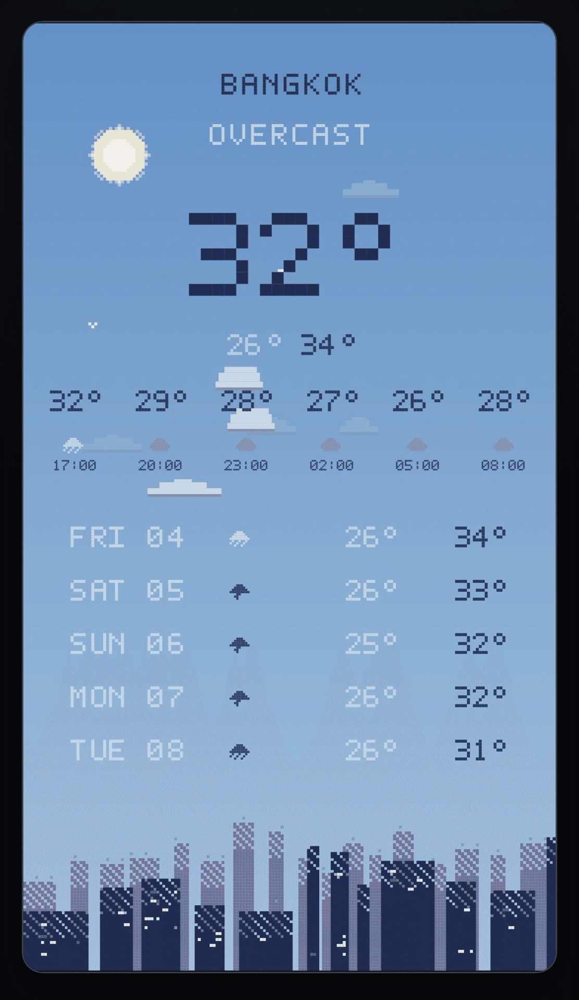
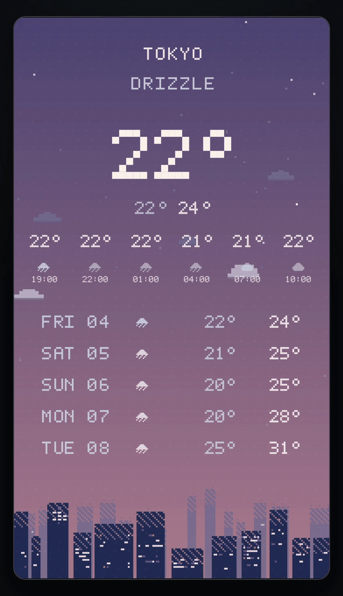
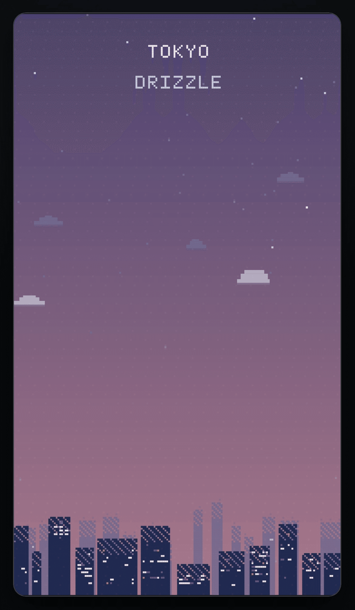
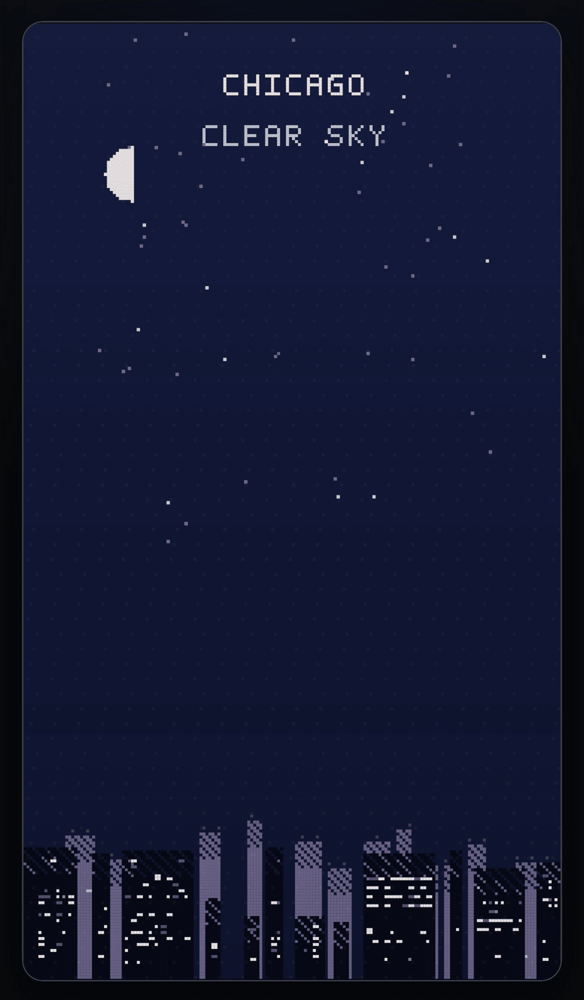

自分専用だったアプリを、初めて外に出した
iPhoneの画面を整理していて、ふと気がついた。
生活の役に立つ立派なアプリやツールより、
自分で作ったアプリの方を開くことが増えていた。
誰かに見せるためでも、公開するためでもない。
ただ、自分が触りたくて作ったものだった。
『SteamClock』
蒸気が噴き出し、ニキシー管がぼんやり光る。
時間を確認するだけならスマホの画面で十分だが、
わざわざ歯車を回し、煙を出し、光らせる。
ただ時間が流れるのを眺めるための時計になった。
時間を「確認」しないために作った、SteamClockという時計（自作アプリ）
『CoffeeFactory』
コーヒーができるまで、
小さな工場でトラックやこびとたちが待っている。
数字が減るだけのタイマーより、
待ち時間そのものを楽しめるものにしたかった。
コーヒーが落ちるまでの、静かな時間「CoffeeFactory」（自作アプリ）
『ChordDrift』
ローマ数字と色だけが、宇宙船のレーダーのように並ぶ。
音楽の理屈を理解する前に、ただ音の間を漂ってみたかった。
音楽知識ゼロ。コード進行で漂う音の宇宙「ChordDrift」（自作アプリ）
どれも、目的を最短で達成するための道具ではなかった。
気がつくとあえて操作を絞り、どこかに「余白」を残していた。
たまに開いて少し眺める。
現実から少しだけ離れて一息つくための、
小さな茶室のような場所だった。
『DotWeather』を公開した
最近、その中のひとつだった『DotWeather』を、
初めてWebアプリとして公開した。
アプリへのアクセスはこちらから
https://sukimastock.github.io/yumaniwa-town/?work=dotweather
今日の天気を、小さな街の景色として眺める。
それだけのアプリだった。
公開後は、風や雲が実際の風向きや強さに合わせて動くようにした。
雨の降り方や、虹など、空の表現も少しずつ増やした。


すると、「雑談配信で置いておきたい」という反応をもらった。
自分としては想定外の使い方だったが、なるほどと思った。
そこで「もしかすると、予報すらいらないのでは」と思い、
予報を消し、都市名と現在の天気、景色だけを残した
【Ambient mode】を追加した。


空の表現を足したことが、逆に情報を減らすことに繋がった。
少しずつ「空を眺めるアプリ」に近づいている気がする。
自分専用アプリだったときには、自分の使い方しか知らなかった。
外に出してみると、自分では思いつかなかった見方を教えてもらえた。
自分が触りたくて作ったものを、そっと外に置いてみる。
その扉を少しだけ開けてみた。
『DotWeather』を、この度Webアプリとして移植しました！☀️☔️
— はままぁ (@sukimastock) August 6, 2026
iPhoneでもAndroidでもPCでもご利用いただけます！
都市名横の< >で都市切り替え、
右上の☰からメニューが開きます。
「CITIES 」から都市の追加・削除や並び替えもできます。
こちらからどうぞ↓https://t.co/te9hZEOYyx#個人開発 https://t.co/YMWNDHqaES